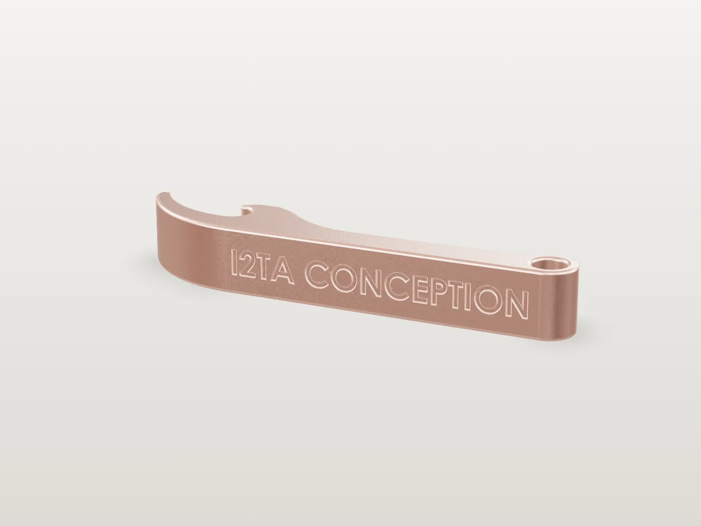

Conception SolidWorks, mises en plan GD&T, optimisation DFM et rétro-ingénierie pour les usineurs, chaudronniers et bureaux d'études. Retour de faisabilité sous 24 h ouvrées.
02Mises en plan GD&TPlans normés, tolérancement fonctionnel
Plans de définition normés ISO, tolérancement GD&T et nomenclatures, prêts pour vos fournisseurs. Reprise de vos plans 2D pour les modéliser en 3D.
Je dimensionne pour le jeu de fonctionnement réellement nécessaire, je calcule les chaînes de cotes en amont, et je ne tolère serré que là où ça change le comportement de l'assemblage. Le reste reste en tolérance courante : ça se voit directement sur le devis d'usinage.
03Optimisation DFMLe bon procédé, la bonne nuance
Choix de nuance selon l'application réelle : propriétés mécaniques, traitement thermique, usinabilité, coût. Une pièce nitrurée à 700 HV n'a pas le même cahier des charges qu'une pièce brunie.
Usinage, tôlerie, soudure, chaudronnerie : selon la pièce, j'oriente vers le bon procédé, ce qui évite de sur-spécifier une pièce qui aurait simplement dû être pliée ou soudée.
04Rétro-ingénierieScan, STL ou pièce sans plan → STEP
Un STL ou un nuage de points, ce n'est pas de la CAO : c'est une peau triangulée qu'aucun convertisseur automatique ne transforme en pièce usinable. Je reprends la géométrie à la main (surfaces, axes, congés, perçages) pour livrer un STEP solide, coté et modifiable.
Pièce obsolète, existant sans plan, modèle de designer à rendre fabricable : le livrable est un fichier que l'usineur ouvre sans se plaindre.
05Conception pour l'impression 3DModèles prêts à imprimer
Épaisseurs de paroi, orientation d'impression, supports, jeux et tolérances d'assemblage selon le procédé. Je livre le modèle (STEP ou STL) prêt à imprimer, pour un prototype, une petite série ou un gabarit : l'impression est réalisée par vos soins ou par votre prestataire.
06Outillages et gabaritsMontages, gabarits de contrôle
Conception d'outillages machine et de gabarits de contrôle, avec la culture de la production réelle : accessibilité, prise de pièce, contrôle.
07Rendus et vues 3DKeyShot, GLB pour la vente en ligne
Rendus photoréalistes KeyShot pour vos présentations produit, et vues 3D interactives (fichier GLB) à intégrer sur votre boutique : rotation, zoom, choix de matière.
Tous corps de métier : usinage · chaudronnerie · tôlerie · soudure · découpe laser · impression 3D

Vue 3D interactive
Essayez-la vous-même
Un fichier GLB par produit : vos clients tournent, zooment et changent de matière directement sur votre site. Ici, un décapsuleur conçu et rendu par I2TA, en trois finitions.
Plan 2D, STEP, STL, croquis, photo ou simple description, par e-mail ou formulaire.
02
Retour de faisabilité
Je vous dis si c'est faisable, et comment, sous 24 h ouvrées.
03
Chiffrage et livrables
Chiffrage en heures, livrables, itérations et délai validés avant tout démarrage.
Formats acceptésSTEPSTLDWGDXFPDFSLDPRTPhotos
Profil
Un ingénieur, un seul interlocuteur
Structure indépendante récente, mais dix ans d'usinage et de conception automobile derrière chaque plan : une expérience industrielle directement utile à votre projet. Pas une promesse, un parcours.
10 ans
En industrie automobile
Conception et suivi de production en conditions réelles, pas seulement en bureau d'études.
1
Seul interlocuteur
La personne qui chiffre est celle qui conçoit et dessine. Ingénieur Matériaux et Mécanique.
24 h
Retour de faisabilité
En jours ouvrés, avec les bonnes questions techniques dès le départ.
La conception ne s'arrête pas à l'écran : passionné de mécanique, de la restauration de tracteurs anciens à la géométrie de machines d'usinage, je sais ce qu'une pièce doit endurer parce que je l'ai souvent réparée moi-même.
Un plan à sortir ? Parlons-en.
Décrivez votre besoin : je vous dis sous 24 h ouvrées si c'est faisable, et comment. Fichiers par e-mail ou lien de partage.